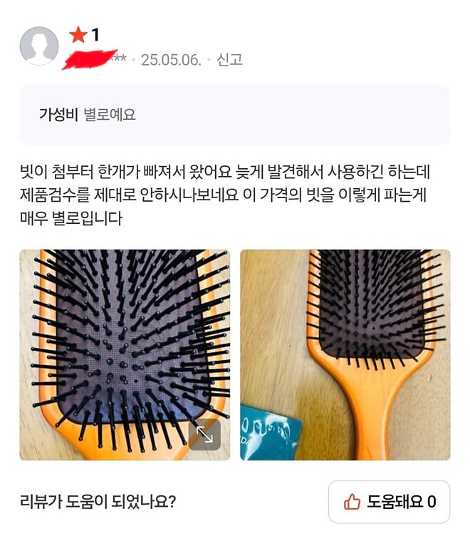
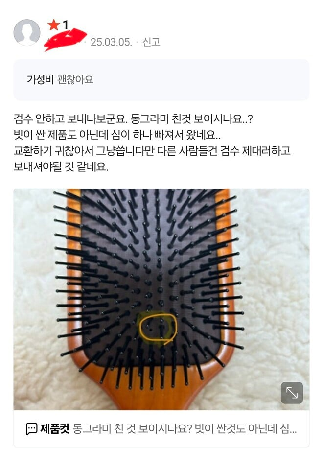
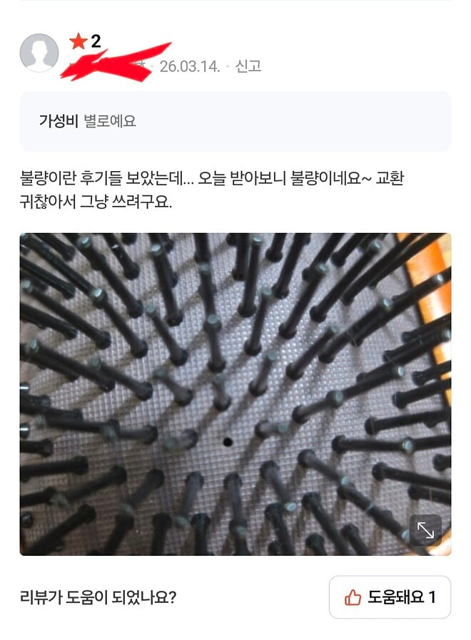
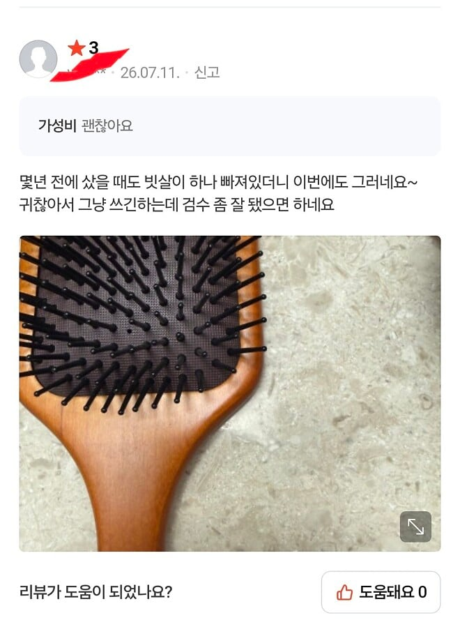
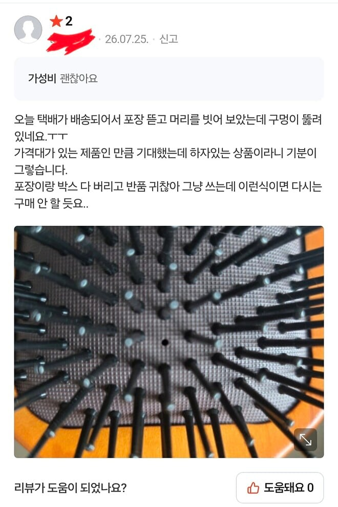
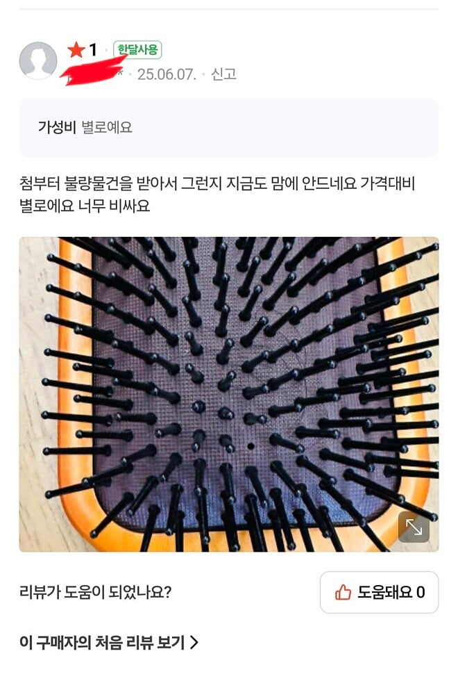
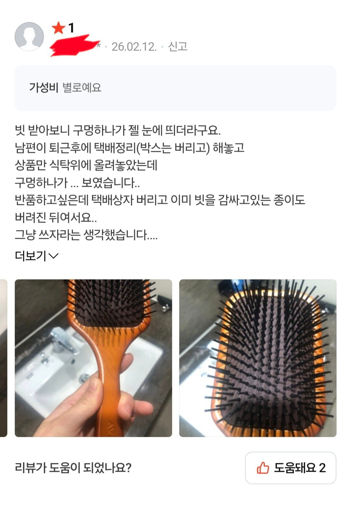
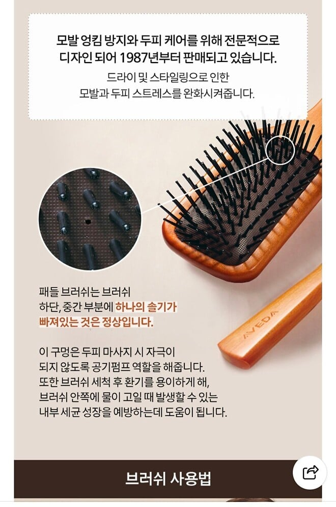

어째서인지 평점이 깍이는 제품.








어째서인지 평점이 깍이는 제품.
요즘 사람들 그걸 안 한다. 알아보려 하질 않아 이상하네 하고 별점 깎고 지나감. 댓글에 욕하든지. 학생들 문해력도 마찬가지임 모르는 단어가 있으면 알아볼 생각 없이 이상하네 왜 이런말을 쓰지 하고 지나감
뭔 요즘이야 시발ㅋㅋ
저 구멍하나때문애 안에 들어간 물이 싹다 빠질 수 있을까? 물 한 번 들어가면 바로 곰팡이배양실 될거같은데
물 들어갈수밖에 없는 재질과 구조라서 대안책으로 저리한거같은데
만약 너말대로 절대로 물 완벽하게 안들어가게 할려면 저 나무재질 방수 코팅하고 저 심들 고정하는 천? 재질도 방수처리하고 그래야하는데 그러면 원가가 올라가서 가격이 두세배이상은 나갈듯? 그러면 아무도 안살거같은데
특히나 저런 물건은 공장에서 대량생산해서 판매하는데 이태까지 곰팡이 이슈가 없었으니까 계속 파는거 아닐까
우리나라에서 그런거 생기는 제품 막 팔면 바로 누가 신고 때려서 그 제품 못팜
저쪽에 포장을 추가로해서 때고 사용해야하는 그런걸 유도하면 안되나?
저거 안보는 놈들은 그것도 안보고 걍 씀ㅋㅋㅋ 똑같을거임
바이럴 성공
뭔가 공정을 추가해서 저길 특이하게 바꾸든지 마케팅을 잘 하든지 해야겠네..
소비자 대부분 설명서를 안봄 일단 선 클레임이 정배라 생각함 ㅋㅋㅋ
존나 얼탱이 없는건 내가 수십년전에 본 쿠션빗도 다 저기에 숨구멍이 있다는거임 손가락으로 맨날 눌러봐서 앎
사람들이 생각보다 주변을 관찰하지 않음. 사실 조금만 생각했어도 저기 왜 구멍이 있었어야 하는지는 추측 가능했을 것.
그니까 어린 나도 그거 푸슉푸슉 누르면서 '여기로 바람이 빠지는구나' 유추를 했는데 그것까지 생각 안하고 하자로 생각하는거겠지
구멍이 저 위치여야했다면 하다못해 누가봐도 이건 빗살이 빠진게 아니다 싶게 구멍 모양을 바꿔야지
구멍 모양을 바꾸면 금형부터 시작해서 생각보다 큰 돈이 들어감
영업마진 잘해봐야 1% 될까말까 한 좆조 제조업에서는 금형하나 바꾸는것도 미래를 걸고 시도하는 도박임 ㅋㅋㅋ
차라리 정가운데에 하지 저렇게 애매한 위치니까 오해할만하네
본문에 리뷰쓰는 새끼들이랑 능지가 같냐 ㅋㅋㅋㅋㅋㅋㅋ 저렇게 생긴 빗 죄다 저기 구멍 뚫려있어
난 납작한것만 써봐서 첨보는데? 첨보면 모를수있지 능지 ㅇㅈㄹ 하네 븅신인가
본문이랑 이것도 똑같네. 처 알려줘도 오해할만하다 ㅇㅈㄹㅋㅋㅋㅋㅋㅋㅋㅋㅋ
와 진짜 과학인가
바코드닉에뭘바래 ㅋㅋ
판매자 : 공기펌프를 위함입니다.
구매자 : ....근데 왜 거기에 뚫었어요? 오해하게되잖아요!
이게 만약 애플 제품이면 감성 이지랄 하면서 인체공악 어쩌구 하면서 뺠았을건데...
인체공학...?
저런 리뷰 때문에 복잡한 공정 사용하면 결국 정상적인 고객들이 부담하게 되는거임
판매자 답변만 달아놔도 해결될 문제아닌가 이건 소통의 문제지
일리는 있다만 제품 판매페이지도 제대로 안보는데 답변을 단다고 볼지 의문이네 ㅋㅋ
답변달면 이제 이걸 왜 구분이 안되게해서 헷갈리게 해요 빼애액 하는새끼들 한트럭 나옴
공기구멍 하나 원래있음 불량아님. 이라고 존나크게 뽑은 종이한장으로 빗 감싸서 택배보내야됨
못배운 보지라 죄송합니다 해야되는거 아님?
이거 우리집에도 있는데 저거 좋더라
저거 진짜좋긴함
누가 빗 따위의 사용설명서를 정독하겠어....ㅋㅋㅋㅋㅋㅋ
나도 하나 사서 쓰고있는데 좋긴함 ㅋㅋㅋ
이쯤되면 그냥 다 박아넣고 다른데다 구멍뚫어라.
면세점서 구매함ㅋㅋ
근데 상품설명 쓸데없이 존나 긴 경우 너무 많아
필요한 정보를 찾을수가 없음
구멍위치를 좀 바꾸면 어떻까 싶네..
원래 인간 절반은 평균이하임